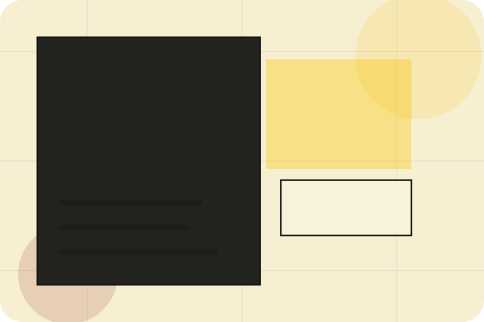
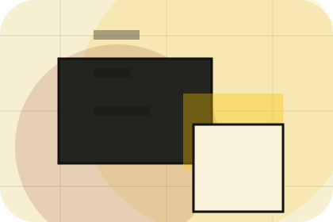
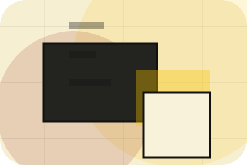
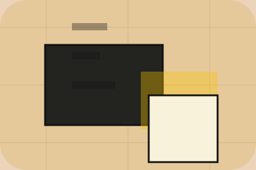

Context
Search gives the page a specific angle instead of repeating the navigation label.
Library / 01
Library opens as a clear publishing decision hub: what Index offers, who it helps, why it matters, and which route to take first.
The first screen combines positioning, proof, primary action, and fast internal navigation, so people can act immediately or compare the rest of the library route with context.
Editorial masthead hero
Select the closest route and Index keeps the next step, proof, and follow-up expectation aligned with authority and discovery.

Library / 02
Categories adds editorial context to the library route, using the print magazine archive structure to support authority and discovery before visitors choose a next step.
Index uses column article cards and focused copy to make the decision easier to scan, aligning the section with authority and discovery rather than filling space.
Explore LibraryCategories gives the page a specific angle instead of repeating the navigation label.
The column article cards show what to compare, what to avoid, and what matters most for publishing, information & knowledge platforms visitors.
The final cue points to a useful internal route so the section keeps the journey moving.
Library / 03
Search adds editorial context to the library route, using the print magazine archive structure to support authority and discovery before visitors choose a next step.
Index uses column article cards and focused copy to make the decision easier to scan, aligning the section with authority and discovery rather than filling space.
Explore LibrarySearch gives the page a specific angle instead of repeating the navigation label.
The column article cards show what to compare, what to avoid, and what matters most for publishing, information & knowledge platforms visitors.
The final cue points to a useful internal route so the section keeps the journey moving.
Library / 05
Recent adds editorial context to the library route, using the print magazine archive structure to support authority and discovery before visitors choose a next step.
Index uses column article cards and focused copy to make the decision easier to scan, aligning the section with authority and discovery rather than filling space.
Explore LibraryRecent gives the page a specific angle instead of repeating the navigation label.
The column article cards show what to compare, what to avoid, and what matters most for publishing, information & knowledge platforms visitors.
The final cue points to a useful internal route so the section keeps the journey moving.
Library / 06
Popular adds editorial context to the library route, using the print magazine archive structure to support authority and discovery before visitors choose a next step.
Index uses column article cards and focused copy to make the decision easier to scan, aligning the section with authority and discovery rather than filling space.
Explore LibraryPopular gives the page a specific angle instead of repeating the navigation label.
The column article cards show what to compare, what to avoid, and what matters most for publishing, information & knowledge platforms visitors.
The final cue points to a useful internal route so the section keeps the journey moving.
Library / 07
Filters adds editorial context to the library route, using the print magazine archive structure to support authority and discovery before visitors choose a next step.
Index uses column article cards and focused copy to make the decision easier to scan, aligning the section with authority and discovery rather than filling space.
Explore LibraryFilters gives the page a specific angle instead of repeating the navigation label.
The column article cards show what to compare, what to avoid, and what matters most for publishing, information & knowledge platforms visitors.
The final cue points to a useful internal route so the section keeps the journey moving.
Library / 08
Access adds editorial context to the library route, using the print magazine archive structure to support authority and discovery before visitors choose a next step.
Index uses column article cards and focused copy to make the decision easier to scan, aligning the section with authority and discovery rather than filling space.
Explore LibraryIndex structures access around context, judgment, and a clear next route so visitors can compare the block quickly before they subscribe.
SubscribeLibrary / 09
Explore adds editorial context to the library route, using the print magazine archive structure to support authority and discovery before visitors choose a next step.
Index uses column article cards and focused copy to make the decision easier to scan, aligning the section with authority and discovery rather than filling space.
Explore Library

Explore gives the page a specific angle instead of repeating the navigation label.
Library / 10
Index closes the library route with a clear action, a quick reminder of the value, and a low-friction way to subscribe.
Visitors who are ready can use the primary action. Visitors who are still comparing can scan the section links, proof, and support routes before they subscribe.
SubscribeThe final block keeps the choice simple: act now, compare one more proof route, or send enough detail for a focused response.
Subscribeauthority and discovery
A knowledge platform with magazine columns, archive search, author cards, and newsletter conversion. Library ends with a direct path to subscribe, plus enough context for visitors who still need to compare.

SubscribeInformation is provided for planning and should be reviewed for the final client, location, and operating rules.